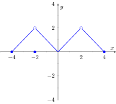

As we have studied limits, we have gained the intuition that limits measure “where a function is heading.” That is, if \(\lim\limits_{x\to 1} f(x) = 3\text{,}\) then as \(x\) is close to \(1\text{,}\)\(f(x)\) is close to \(3\text{.}\) We have seen, though, that this is not necessarily a good indicator of what \(f(1)\) actually is. This can be problematic; functions can tend to one value but attain another. This section focuses on functions that do not exhibit such behavior.
Definition1.5.1.Continuous Function.
Let \(f\) be a function whose domain contains an open interval \(I\text{.}\)
\(f\) is continuous at a point \(c\) in \(I\) if \(\lim\limits_{x\to c}f(x) = f(c)\text{.}\)
\(f\) is continuous on the open interval \(I\) if \(f\) is continuous at \(c\) for all values of \(c\) in \(I\text{.}\) If \(f\) is continuous on \((-\infty,\infty)\text{,}\) we say \(f\) is continuous everywhere (or everywhere continuous).
Note that in Definition 1.5.1, a function \(f\) can only be continuous at a point \(c\) if \(c\) is in the domain of \(f\text{.}\)
We proceed by examining the three criteria for continuity.
The limits \(\lim\limits_{x\to c} f(x)\) exists for all \(c\) between \(0\) and \(3\text{.}\)
\(f(c)\) is defined for all \(c\) between \(0\) and \(3\text{,}\)except for\(c=1\text{.}\) We know immediately that \(f\) cannot be continuous at \(x=1\text{.}\)
The limit \(\lim\limits_{x\to c} f(x) = f(c)\) for all \(c\) between \(0\) and \(3\text{,}\) except, of course, for \(c=1\text{.}\)
We conclude that \(f\) is continuous at every point of the interval \((0,3)\) except at \(x=1\text{.}\) Therefore \(f\) is continuous on \((0,1)\) and \((1,3)\text{.}\)
Example1.5.5.Finding intervals of continuity.
The floor function, \(f(x) = \lfloor x \rfloor\text{,}\) returns the largest integer smaller than, or equal to, the input \(x\text{.}\) (For example, \(f(\pi) = \lfloor \pi \rfloor = 3\text{.}\)) The graph of \(f\) in Figure 1.5.6 demonstrates why this is often called a “step function.”
Give the intervals on which \(f\) is continuous.
Figure1.5.6.A graph of the step function in Example 1.5.5
The limits \(\lim\limits_{x\to c} f(x)\) do not exist at the jumps from one “step” to the next, which occur at all integer values of \(c\text{.}\) Therefore the limits exist for all \(c\) except when \(c\) is an integer.
The function is defined for all values of \(c\text{.}\)
The limit \(\lim\limits_{x\to c} f(x) = f(c)\) for all values of \(c\) where the limit exist, since each step consists of just a line.
We conclude that \(f\) is continuous everywhere except at integer values of \(c\text{.}\) So the intervals on which \(f\) is continuous are
We could also say that \(f\) is continuous on all intervals of the form \((n,n+1)\) where \(n\) is an integer.
Our definition of continuity on an interval specifies the interval is an open interval. We can extend the definition of continuity to closed intervals of the form \([a,b]\) by considering the appropriate one-sided limits at the endpoints.
Definition1.5.7.Continuity on Closed Intervals.
Let \(f\) be defined on the closed interval \([a,b]\) for some real numbers \(a\lt b\text{.}\)
We say \(f\) is continuous on the closed interval \([a,b]\) if:
\(f\) is continuous on \((a,b)\text{,}\)
\(\lim\limits_{x\to a^+} f(x) = f(a)\) and
\(\lim\limits_{x\to b^-} f(x) = f(b)\text{.}\)
We can make the appropriate adjustments to talk about continuity on half-open intervals such as \([a,b)\) or \((a,b]\) if necessary.
If the domain of \(f\) includes values less than \(a\text{,}\) we say that Item 2 in Definition 1.5.7 indicates that \(f\) is continuous from the right at \(a\text{.}\) But if \(f\) is undefined for \(x\lt a\text{,}\) we can say that \(f\) is continuous at \(a\) without ambiguity.
Similarly, Item 3 indcates that \(f\) is continuous from the left at \(b\text{,}\) and if \(f\) is not defined for \(x\gt b\text{,}\) we can simply say that \(f\) is continuous at \(b\text{.}\)
For example, it makes sense to say that the function \(f(x)=\sqrt{1-x^2}\) is continuous at \(1\) and \(-1\text{,}\) while the floor function in Example 1.5.5 is continuous from the left at \(1\) and \(-1\text{,}\) but is not continuous at these points.
Using this new definition, we can adjust our answer in Example 1.5.3 by stating that \(f\) is continuous on \([0,1)\) and \((1,3]\text{,}\) as mentioned in that example. We can also revisit Example 1.5.5 and state that the floor function is continuous on the following half-open intervals
This can tempt us to conclude that \(f\) is continuous everywhere; after all, if \(f\) is continuous on \([0,1)\) and \([1,2)\text{,}\) isn't \(f\) also continuous on \([0,2)\text{?}\) Of course, the answer is no, and the graph of the floor function immediately confirms this.
Continuous functions are important as they behave in a predictable fashion: functions attain the value they approach. Because continuity is so important, most of the functions you have likely seen in the past are continuous on their domains. This is demonstrated in the following example where we examine the intervals of continuity of a variety of common functions.
Example1.5.9.Determining intervals on which a function is continuous.
For each of the following functions, give the domain of the function and the interval(s) on which it is continuous.
The domain of \(f(x) = 1/x\) is \((-\infty,0) \cup (0,\infty)\text{.}\) As it is a rational function, we apply Theorem 1.3.4 to recognize that \(f\) is continuous on all of its domain.
The domain of \(f(x) = \sin(x)\) is all real numbers, or \((-\infty,\infty)\text{.}\) Applying Theorem 1.3.7 shows that \(\sin(x)\) is continuous everywhere.
The domain of \(f(x) = \sqrt{x}\) is \([0,\infty)\text{.}\) Applying Theorem 1.3.7 shows that \(f(x) = \sqrt{x}\) is continuous on its domain of \([0,\infty)\text{.}\)
The domain of \(f(x) = \sqrt{1-x^2}\) is \([-1,1]\text{.}\) Applying Theorems 1.3.1 and Theorem 1.3.7 shows that \(f\) is continuous on all of its domain, \([-1,1]\text{.}\)
The domain of \(f(x) = \abs{x}\) is \((-\infty,\infty)\text{.}\) We can define the absolute value function as
Each “piece” of this piecewise defined function is continuous on all of its domain, giving that \(f\) is continuous on \((-\infty,0)\) and \([0,\infty)\text{.}\) We cannot assume this implies that \(f\) is continuous on \((-\infty,\infty)\text{;}\) we need to check that \(\lim\limits_{x\to 0}f(x) = f(0)\text{,}\) as \(x=0\) is the point where \(f\) transitions from one “piece” of its definition to the other. It is easy to verify that this is indeed true, hence we conclude that \(f(x) = \abs{x}\) is continuous everywhere.
Continuity is inherently tied to the properties of limits. Because of this, the properties of limits found in Theorems 1.3.1 and Theorem 1.3.4 apply to continuity as well. Further, now knowing the definition of continuity we can re-read Theorem 1.3.7 as giving a list of functions that are continuous on their domains. The following theorem states how continuous functions can be combined to form other continuous functions, followed by a theorem which formally lists functions that we know are continuous on their domains.
Theorem1.5.10.Properties of Continuous Functions.
Let \(f\) and \(g\) be continuous functions on an interval \(I\text{,}\) let \(c\) be a real number and let \(n\) be a positive integer. The following functions are continuous on \(I\text{.}\)
Sums/Difference
\(\displaystyle f\pm g\)
Constant Multiple
\(\displaystyle c\cdot f\)
Product
\(\displaystyle f\cdot g\)
Quotient
\(f/g\) (as long as \(g\neq 0\) on \(I\))
Power
\(\displaystyle f^n\)
Root
\(\sqrt[n]{f}\) (If \(n\) is even then require \(f(x)\geq 0\) on \(I\text{.}\))
Compositions
Adjust the definitions of \(f\) and \(g\) to: Let \(f\) be continuous on \(I\text{,}\) where the range of \(f\) on \(I\) is \(J\text{,}\) and let \(g\) be continuous on \(J\text{.}\) Then \(g\circ f\text{,}\) i.e., \(g(f(x))\text{,}\) is continuous on \(I\text{.}\)
Figure1.5.15.A graph of \(f(x)=\sqrt{x-1}+\sqrt{5-x}\)
The square root terms are continuous on the intervals \([1,\infty)\) and \((-\infty,5]\text{,}\) respectively. As \(f\) is continuous only where each term is continuous, \(f\) is continuous on \([1,5]\text{,}\) the intersection of these two intervals. A graph of \(f\) is given in Figure 1.5.15.
The functions \(y=x\) and \(y=\sin(x)\) are each continuous everywhere, hence their product is, too.
Theorem 1.5.12 states that \(f(x) = \tan(x)\) is continuous on its domain. Its domain includes all real numbers except odd multiples of \(\pi/2\text{.}\) Thus the intervals on which \(f(x) = \tan(x)\) is continuous are
Here, \(f(x)\) is the composition \(g(h(x))\text{,}\) where \(g(x) = \sqrt{x}\) and \(h(x)=\ln(x)\text{.}\) The domain of \(g\) is \([0,\infty)\text{,}\) while the range of \(h\) is \((-\infty,\infty)\text{.}\) If we restrict the domain to \([1,\infty)\text{,}\) then the output from \(h(x)=\ln(x)\) is restricted to \([0,\infty)\text{,}\) on which \(g(x) = \sqrt{x}\) is defined. Thus the domain of \(f(x) = \sqrt{\ln(x)}\) is \([1,\infty)\text{.}\)
Classification of discontinuities.
We now know what it means for a function to be continuous, so of course we can easily say what it means for a function to be discontinuous; namely, not continuous. However, to better understand continuity, it is worth our time to discuss the different ways in which a function can fail to be discontinuous. By definition, a function \(f\) is continuous at a point \(a\) in its domain if \(\lim\limits_{x\to a}f(x) = f(a)\text{.}\) If this equality fails to hold, then \(f\) is not continuous. We note, however, that there are a number of different things that can go wrong with this equality.
Figure1.5.16.Discussing classification of discontinuities
\(\lim\limits_{x\to a}f(x)=L\) exists, but \(L\neq f(a)\text{,}\) or \(f(a)\) is undefined. Such a discontinuity is called a removable discontinuity .
A removable discontinuity can be pictured as a “hole” in the graph of \(f\text{.}\) The term “removable” refers to the fact that by simply redefining \(f(a)\) to equal \(L\) (that is, changing the value of \(f\) at a single point), we can create a new function that is continuous at \(x=a\text{,}\) and agrees with \(f\) at all \(x\neq a\text{.}\)
\(\lim\limits_{x\to a^+}f(x) = L\) and \(\lim\limits_{x\to a^-}f(x)=M\) exist, but \(L\neq M\text{.}\) In this case the left and right hand limits both exist, but since they are not equal, the limit of \(f\) as \(x\to a\) does not exist. Such a discontinuity is called a jump discontinuity.
The phrase “jump discontinuity” is meant to represent the fact that visually, the graph of \(f\) “jumps” from one value to another as we cross the value \(x=a\text{.}\)
The function \(f\) is unbounded near \(x=a\text{.}\) This means that the value of \(f\) becomes arbitrarily large (or large and negative) as \(x\) approaches \(a\text{.}\) Such a discontinuity is called an infinite discontinuity.
Infinite discontinuities are most easily understood in terms of infinite limits, which are discussed in Section 1.6.
(a)The graph of a function with a removable discontinuity at \(x=2\)
(b)The graph of a function with a jump discontinuity at \(x=2\)
(c)The graph of a function with an infinite discontinuity at \(x=2\)
Figure1.5.17.Illustrating three common types of discontinuity
Consequences of continuity.
A common way of thinking of a continuous function is that “its graph can be sketched without lifting your pencil.” That is, its graph forms a “continuous” curve, without holes, breaks or jumps. This pseudo-definition glosses over some of the finer points of continuity. There are some very strange continuous functions that one would be hard pressed to actually sketch by hand.
However, this intuitive notion of continuity does help us understand another important concept as follows. Suppose \(f\) is defined on \([1,2]\text{,}\) and \(f(1) = -10\) and \(f(2) = 5\text{.}\) If \(f\) is continuous on \([1,2]\) (i.e., its graph can be sketched as a continuous curve from \((1,-10)\) to \((2,5)\)) then we know intuitively that somewhere on the interval \([1,2]\)\(f\) must be equal to \(-9\text{,}\) and \(-8\text{,}\) and \(-7,-6,\ldots,0,1/2\text{,}\) etc. In short, \(f\) takes on all intermediate values between \(-10\) and \(5\text{.}\) It may take on more values; \(f\) may actually equal \(6\) at some time, for instance, but we are guaranteed all values between \(-10\) and \(5\text{.}\)
Figure1.5.18.Illustration of the Intermediate Value Theorem: the output \(3\) is in between \(-10\) and \(5\text{,}\) and therefore any continuous function on \([1,2]\) with \(f(1) = -10\) and \(f(2) = 5\) will achieve the output \(3\) somewhere in \([1,2]\)
While this notion seems intuitive, it is not trivial to prove and its importance is profound. Therefore the concept is stated in the form of a theorem.
Theorem1.5.19.Intermediate Value Theorem.
Let \(f\) be a continuous function on \([a,b]\) and, without loss of generality, let \(f(a) \lt f(b)\text{.}\) Then for every value \(y\text{,}\) where \(f(a) \lt y \lt f(b)\text{,}\) there is at least one value \(c\) in \((a,b)\) such that \(f(c) = y\text{.}\)
One important application of the Intermediate Value Theorem is root finding. Given a function \(f\text{,}\) we are often interested in finding values of \(x\) where \(f(x) = 0\text{.}\) These roots may be very difficult to find exactly. Good approximations can be found through successive applications of this theorem. Suppose through direct computation we find that \(f(a) \lt 0\) and \(f(b)\gt 0\text{,}\) where \(a\lt b\text{.}\) The Intermediate Value Theorem states that there is at least one \(c\) in \((a,b)\) such that \(f(c) = 0\text{.}\) The theorem does not give us any clue as to where to find such a value in the interval \((a,b)\text{,}\) just that at least one such value exists.
There is a technique that produces a good approximation of \(c\text{.}\) Let \(d\) be the midpoint of the interval \([a,b]\text{,}\) with \(f(a) \lt 0\) and \(f(b) \gt 0\) and consider \(f(d)\text{.}\) There are three possibilities:
\(f(d) = 0\text{:}\) We got lucky and stumbled on the actual value. We stop as we found a root.
\(f(d) \lt 0\text{:}\) Then we know there is a root of \(f\) on the interval \([d,b]\) — we have halved the size of our interval, hence are closer to a good approximation of the root.
\(f(d) \gt 0\text{:}\) Then we know there is a root of \(f\) on the interval \([a,d]\) — again,we have halved the size of our interval, hence are closer to a good approximation of the root.
Successively applying this technique is called the Bisection Method of root finding. We continue until the interval is sufficiently small. We demonstrate this in the following example.
Example1.5.21.Using the Bisection Method.
Approximate the root of \(f(x) = x-\cos(x)\text{,}\) accurate to three places after the decimal.
Consider the graph of \(f(x) = x-\cos(x)\text{,}\) shown in Figure 1.5.22. It is clear that the graph crosses the \(x\)-axis somewhere near \(x=0.8\text{.}\) To start the Bisection Method, pick an interval that contains \(0.8\text{.}\) We choose \([0.7,0.9]\text{.}\) Note that all we care about are signs of \(f(x)\text{,}\) not their actual value, so this is all we display.
Figure1.5.22.Graphing a root of \(f(x) = x-\cos(x)\)
Iteration 1:
\(f(0.7) \lt 0\text{,}\)\(f(0.9) \gt 0\text{,}\) and \(f(0.8) \gt 0\text{.}\) So replace \(0.9\) with \(0.8\) and repeat.
Iteration 2:
\(f(0.7)\lt 0\text{,}\)\(f(0.8) \gt 0\text{,}\) and at the midpoint, \(0.75\text{,}\) we have \(f(0.75) \gt 0\text{.}\) So replace \(0.8\) with \(0.75\) and repeat. Note that we don't need to continue to check the endpoints, just the midpoint. Thus we put the rest of the iterations in Table 1.5.23.
Table1.5.23.Iterations of the Bisection Method of Root Finding
Iteration #
Interval
Midpoint Sign
\(1\)
\([\highlight{0.7},0.9]\)
\(f(0.8) \gt 0\)
\(2\)
\([\highlight{0.7},0.8]\)
\(f(0.75) \gt 0\)
\(3\)
\([\highlight{0.7},\highlight{0.75}]\)
\(f(0.725)\lt 0\)
\(4\)
\([0.725,\highlight{0.75}]\)
\(f(0.7375)\lt 0\)
\(5\)
\([\highlight{0.7375},\highlight{0.75}]\)
\(f(0.7438)\gt \)
\(6\)
\([\highlight{0.7375},0.7438]\)
\(f(0.7407)\gt 0\)
\(7\)
\([\highlight{0.7375},0.7407]\)
\(f(0.7391)\gt 0\)
\(8\)
\([\highlight{0.7375},\highlight{0.7391}]\)
\(f(0.7383)\lt 0\)
\(9\)
\([0.7383,\highlight{0.7391}]\)
\(f(0.7387)\lt 0\)
\(10\)
\([0.7387,\highlight{0.7391}]\)
\(f(0.7389)\lt 0\)
\(11\)
\([0.7389,\highlight{0.7391}]\)
\(f(0.7390)\lt 0\)
\(12\)
\([0.7390,\highlight{0.7391}]\)
Notice that in the 12th iteration we have the endpoints of the interval each starting with \(0.739\text{.}\) Thus we have narrowed the zero down to an accuracy of the first three places after the decimal. Using a computer, we have
Either endpoint of the interval gives a good approximation of where \(f\) is \(0\text{.}\) The Theorem 1.5.19 states that the actual zero is still within this interval. While we do not know its exact value, we know it starts with \(0.739\text{.}\)
This type of exercise is rarely done by hand. Rather, it is simple to program a computer to run such an algorithm and stop when the endpoints differ by a preset small amount. One of the authors did write such a program and found the zero of \(f\) to be \(0.7390851332\) , accurate to \(10\) places after the decimal. While it took a few minutes to write the program, it took less than a thousandth of a second for the program to run the necessary \(35\) iterations. In less than \(8\) hundredths of a second, the zero was calculated to \(100\) decimal places (with less than \(200\) iterations).
It is a simple matter to extend the Bisection Method to solve problems similar to “Find \(x\text{,}\) where \(f(x) = 0\text{.}\)” For instance, we can find \(x\text{,}\) where \(f(x) = 1\text{.}\) It actually works very well to define a new function \(g\) where \(g(x) = f(x) - 1\text{.}\) Then use the Bisection Method to solve \(g(x)=0\text{.}\)
Similarly, given two functions \(f\) and \(g\text{,}\) we can use the Bisection Method to solve \(f(x) = g(x)\text{.}\) Once again, create a new function \(h\) where \(h(x) = f(x)-g(x)\) and solve \(h(x) = 0\text{.}\)
In Section 4.1 another equation solving method will be introduced, called Newton's Method. In many cases, Newton's Method is much faster. It relies on more advanced mathematics, though, so we will wait before introducing it.
This section formally defined what it means to be a continuous function. “Most” functions that we deal with are continuous, so often it feels odd to have to formally define this concept. Regardless, it is important, and forms the basis of the next chapter.
ExercisesExercises
Terms and Concepts
1.
In your own words, describe what it means for a function to be continuous.
2.
In your own words, describe what the Intermediate Value Theorem states.
3.
What is a “root” of a function?
4.
Given functions \(f\) and \(g\) on an interval \(I\text{,}\) how can the Bisection Method be used to find a value \(c\) where \(f(c) = g(c)\text{?}\)
5.
True
False
If \(f\) is defined on an open interval containing \(c\text{,}\) and \(\lim\limits_{x\to c}f(x)\) exists, then \(f\) is continuous at \(c\text{.}\)
6.
True
False
If \(f\) is continuous at \(c\text{,}\) then \(\lim\limits_{x\to c}f(x)\) exists.
7.
True
False
If \(f\) is continuous at \(c\text{,}\) then \(\lim\limits_{x\to c^+}f(x) = f(c)\text{.}\)
8.
True
False
If \(f\) is continuous on \([a,b]\text{,}\) then \(\lim\limits_{x\to a^-}f(x) = f(a)\text{.}\)
9.
True
False
If \(f\) is continuous on \([0,1)\) and \([1,2)\text{,}\) then \(f\) is continuous on \([0,2)\text{.}\)
10.
True
False
The sum of continuous functions is also continuous.
Problems
Exercise Group.
Use the graph to determine if the function is continuous at the given point.
11.
Is \(f\) in the graph below continuous at \(1\text{?}\)
Yes.
No.
If not, state why it is not.
12.
Is \(f\) in the graph below continuous at \(1\text{?}\)
Yes.
No.
If not, state why it is not.
13.
Is \(f\) in the graph below continuous at \(1\text{?}\)
Yes.
No.
If not, state why it is not.
14.
Is \(f\) in the graph below continuous at \(0\text{?}\)
Yes.
No.
If not, state why it is not.
15.
Is \(f\) in the graph below continuous at \(1\text{?}\)
Yes.
No.
If not, state why it is not.
16.
Is \(f\) in the graph below continuous at \(4\text{?}\)
Yes.
No.
If not, state why it is not.
17.
Is \(f\) in the graph below continuous at \(-2\text{,}\)\(0\text{,}\) and \(2\text{?}\)

At \(-2\text{:}\)
Yes.
No.
If not, state why it is not.
At \(0\text{:}\)
Yes.
No.
If not, state why it is not.
At \(2\text{:}\)
Yes.
No.
If not, state why it is not.
18.
Is \(f\) in the graph below continuous at \({\frac{3\pi }{2}}\text{?}\)
Yes.
No.
If not, state why it is not.
Exercise Group.
Determine if \(f\) is continuous at the indicated values.
\(f(x)={\begin{cases}\displaystyle{x^{3}-x^{2}}\amp \text{if}\ x \lt 1\cr
\displaystyle{x-2}\amp \text{if}\ x \ge 1\end{cases}}\)
Is \(f\) is continuous at \(0\text{?}\)
Yes.
No.
If not, explain why not.
Is \(f\) is continuous at \(1\text{?}\)
Yes.
No.
If not, explain why not.
21.
\(f(x)={\begin{cases}\displaystyle{\frac{x^{2}+5x+4}{x^{2}+3x+2}}\amp \text{if}\ x \ne -1\cr
\displaystyle{3}\amp \text{if}\ x = -1\end{cases}}\)
Is \(f\) is continuous at \(-1\text{?}\)
Yes.
No.
If not, explain why not.
Is \(f\) is continuous at \(10\text{?}\)
Yes.
No.
If not, explain why not.
22.
\(f(x)={\begin{cases}\displaystyle{\frac{x^{2}-64}{x^{2}-11x+24}}\amp \text{if}\ x \ne 8\cr
\displaystyle{5}\amp \text{if}\ x = 8\end{cases}}\)
Is \(f\) is continuous at \(0\text{?}\)
Yes.
No.
If not, explain why not.
Is \(f\) is continuous at \(8\text{?}\)
Yes.
No.
If not, explain why not.
Exercise Group.
Give the intervals on which the function is continuous.
23.
\(f(x)={x^{2}+4x+7}\)
24.
\(f(x)={\sqrt{x^{2}-25}}\)
25.
\(f(x)={\sqrt{25-x^{2}}}\)
26.
\(f(x)={\sqrt{1-x}}+{\sqrt{x+5}}\)
27.
\(f(t)={\sqrt{2t^{2}-10}}\)
28.
\(g(t)={\frac{1}{\sqrt{9-t^{2}}}}\)
29.
\(g(t)={\frac{1}{4+8t^{2}}}\)
30.
\(f(x)={7^{x}}\)
31.
\(g(s)=\log_{8}(s)\)
32.
\(h(t)={\sin\!\left(t\right)}\)
33.
\(f(k)={\sqrt{8-e^{k}}}\)
34.
\(f(x)={\cos\!\left(2^{x}+x^{5}\right)}\)
Exercise Group.
Test your understanding of the Intermediate Value Theorem.
35.
Let \(f\) be continuous on \([1,5]\) where \(f(1) = -2\) and \(f(5) = -10\text{.}\) Does a value \(1\lt c\lt 5\) exist such that \(f(c) = -9\text{?}\) Why/why not?
36.
Let \(g\) be continuous on \([-3,7]\) where \(g(0) = 0\) and \(g(2) = 25\text{.}\) Does a value \(-3\lt c\lt 7\) exist such that \(g(c) = 15\text{?}\) Why/why not?
37.
Let \(f\) be continuous on \([-1,1]\) where \(f(-1) = -10\) and \(f(1) = 10\text{.}\) Does a value \(-1\lt c\lt 1\) exist such that \(f(c) = 11\text{?}\) Why/why not?
38.
Let \(h\) be a function on \([-1,1]\) where \(h(-1) = -10\) and \(h(1) = 10\text{.}\) Does a value \(-1\lt c\lt 1\) exist such that \(h(c) = 0\text{?}\) Why/why not?
Exercise Group.
Use the Bisection Method to approximate, accurate to two decimal places, the value of the root of the given function in the given interval.
39.
\(f(x)={x^{2}+2x-4}\) on the interval \({\left[1,1.5\right]}\)
Show the steps you used applying the Bisection Method.
40.
\(f(x)={\sin\!\left(x\right)-\frac{1}{2}}\) on the interval \({\left[0.5,0.55\right]}\)
Show the steps you used applying the Bisection Method.
41.
\(f(x)={e^{x}-2}\) on the interval \({\left[0.65,0.7\right]}\)
Show the steps you used applying the Bisection Method.
42.
\(f(x)={\cos\!\left(x\right)-\sin\!\left(x\right)}\) on the interval \({\left[0.7,0.8\right]}\)
Show the steps you used applying the Bisection Method.
Review
43.
Evaluate the given limits of the piecewise defined function.
\(f(x) ={\begin{cases}\displaystyle{x^{2}+5}\amp \text{if}\ x \lt 10\cr
\displaystyle{10x}\amp \text{if}\ x \ge 10\end{cases}}\)